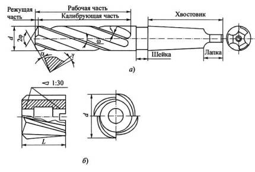
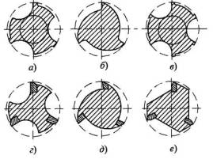
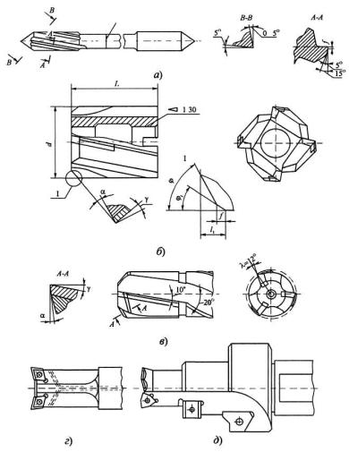

Цилиндрические зенкеры получили наибольшее распространение в механообработке. Они могут быть хвостовыми (а) и насадными (б). К основным конструктивным элементам зенкеров относятся: режущая часть (заборный конус), калибрующая часть, число канавок (зубьев), форма канавок, крепежная часть. К геометрическим параметрам относятся: угол при вершине 2φ, передние γ и задние α углы, углы наклона канавок ω и главных режущих кромок λ.
Режущая часть зенкера предназначена для удаления припуска. Калибрующая часть зенкера обеспечивает необходимую точность размера отверстия, направляет зенкер в процессе обработки отверстия и служит запасом на его переточку. На ней расположены цилиндрические ленточки шириной f = 0,8...2,0 мм для d = 10.. .80 мм. Радиальное биение ленточек должно быть не более 0,04...0,06 мм.
Для снижения трения и исключения возможности защемления в отверстии у зенкера предусматривается обратная конусность по ленточкам в пределах 0,04...0,10 мм на 100 мм длины в зависимости от диаметра инструмента. У твердосплавных зенкеров уменьшение диаметра задается в пределах 0,05...0,08 мм на длине режущей пластины, а диаметр корпуса инструмента занижается на 0,01...0,02 мм по отношению к размеру конца твердосплавной пластины.
Увеличение ширины ленточек твердосплавных зенкеров нецелесообразно, так как оно сопровождается налипанием на них мелкой стружки и приводит к снижению стойкости инструмента. При увеличении обратной конусности наблюдаются вибрации и происходит быстрая потеря размера зенкера при его переточке.
Зенкеры изготавливают, как правило, с тремя (хвостовые) или четырьмя (насадные) канавками. Применяются также насадные зенкеры крупных размеров (d > 58 мм) с шестью и более канавками.
Канавки зенкеров обычно винтовые, но могут быть и прямыми, например у твердосплавных зенкеров для обработки сталей и чугунов высокой твердости. У сборных зенкеров со вставными ножами, в том числе с напайными твердосплавными пластинами, канавки косые, наклонные к оси.
На рисунке ниже показаны некоторые формы канавок, применяемые разными инструментальными заводами. Криволинейная форма канавок (а...д) позволяет упростить изготовление зенкеров и сократить число операций, но требует специальных фасонных фрез. Канавки прямолинейного профиля (ё) часто используются при оснащении насадных зенкеров напайными твердосплавными пластинами.
Сборные зенкеры с целью экономии инструментальных материалов оснащают ножами, закрепляемыми в корпусе из конструкционной стали, который обычно крепится на оправке отверстием с конусностью 1:30 и торцовой шпонкой.
Режущие ножи зенкеров изготавливают из быстрорежущей стали Р6М5 или с напайными пластинами из твердых сплавов марок ВК8, Т15К6 и др.
Корпус зенкера снабжен клиновидными пазами с углом 5...7°, в которые устанавливаются ножи с рифлениями на их опорных поверхностях. После износа зенкера возможно регулирование его диаметра за счет перестановки пластин по рифлениям. Недостатком такой конструкции является невозможность регулирования вылета пластин вдоль оси зенкера. Чтобы исправить этот недостаток, зенкеры с опорной стороны дополнительно снабжают клиньями. При этом ножи и клинья вставляются в плоские пазы, благодаря чему оказывается возможным двойное регулирование: по диаметру и вдоль оси. Однако конструкция такого зенкера несколько усложняется.
При обработке отверстий твердосплавными зенкерами условия резания более благоприятны, чем при сверлении, благодаря большей жесткости инструмента, меньшей нагрузке на режущий клин, лучшим условиям отвода стружки и направления инструмента в отверстии.
Для обработки отверстий малых диаметров (d = 8...20 мм) используют цельные твердосплавные зенкеры, изготавливаемые из пластифицированных заготовок с последующим их спеканием либо полученных путем вышлифовывания профиля алмазными кругами на станках с ЧПУ.
На позиции (а) показан зенкер малого диаметра с рабочей частью из твердого сплава, соединенный с хвостовиком пайкой встык. Здесь заборный конус зенкера является частью конического центра с углом 2φ = 75°. Число зубьев z = 3, форма профиля канавок и зубьев прямолинейная.
Следует отметить, что стоимость цельных твердосплавных зенкеров довольно высокая. Намного дешевле применение твердого сплава в виде напайных пластин стандартной формы, которые напаивают либо на ножи сборных инструментов, либо непосредственно на корпусы насадных или хвостовых зенкеров (б, в).
У насадных твердосплавных зенкеров (б) с целью упрочнения наиболее уязвимых стыков главных и вспомогательных режущих кромок по уголкам затачивают фаски шириной f = 0,5...0,8 мм под углом φ1 = 30° при φ = 60°. Смещение пластин под углом λ = 10... 15° (6) также способствует упрочнению режущих пластин. Такие зенкеры имеют достаточно большие размеры (d = 34...80 мм).
Наибольший удельный вес в машиностроении составляет обработка отверстий диаметром менее 20 мм. В этом случае используют хвостовые зенкеры (в) с напайкой пластин непосредственно на корпус инструментов (d = 12...35 мм, z = 3). Здесь с целью облегчения заточки пластин стружечная канавка по длине пластины имеет наклон под углом ω = 10° с последующим плавным переходом в винтовую канавку под углом ω = 20°. Для повышения прочности режущих кромок доводкой по передней поверхности снимают узкие фаски шириной 0,02...0,05 мм под углом γф = 0...-15°.
При обработке закаленных сталей и особо прочных чугунов стружечные канавки у зенкеров выполняют прямыми. В последние годы широко используются зенкеры с механическим креплением неперетачиваемых твердосплавных пластин. Такие зенкеры позволяют снимать большие припуски. У них пластины, как правило, крепят винтами, что позволяет получать инструменты компактных конструкций. Часто они изготавливаются как комбинированные инструменты (д), позволяющие производить сверление и зенкерование различных по форме поверхностей, в том числе и торцовых фасок.